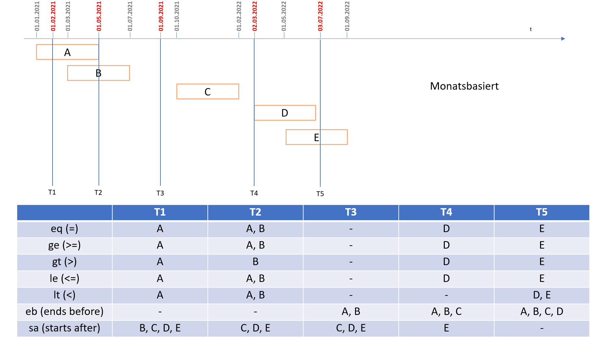

2025.2.0 - ci-build
IGTTPFHIRGatewaygICS - Local Development build (v2025.2.0) built by the FHIR (HL7® FHIR® Standard) Build Tools. See the Directory of published versions
Consent Suche
Randbedingungen
Die Suche nach Einwilligungsinformationen ist mittels der FHIR Search-API umgesetzt. Die Rückgabe erfolgt dementsprechend in Form eines Bundles vom Typ searchset.
Die zurückgegebenen FHIR Consent-Ressourcen entsprechen dem MII KDS Consent Profil
Suchanfragen werden ausschließlich als GET-Requests akzeptiert. Bezüglich des Encodings der URL sei auf die Hinweise unter Technische Grundlagen verwiesen.
Konfigurationshinweise
Bitte beachten Sie die Konfigurationshinweise auf System- und Datenebene.
VERUNDUNG von Parametern
Unterstützt wird die logische UND-Verknüpfung der einzelnen Parameter gemäß FHIR Search API, nicht jedoch das logische ODER.
Paging
Paging entsprechend der FHIR Search API wird unterstützt, namentlich die Parameter
_count: (maximale) Anzahl der im Bundle enthaltenen Ressourcen_offset: fortlaufende Nummer der ersten im Bundle enthaltenen Ressource
Der Default-Offset ist 0. Der Default-Count ist 100. Negative Werte für _offset und _count sind nicht erlaubt. Werden weder _count noch _offset angegeben, enthält das Bundle maximal 100 Ergebnisse (Default-Count=100, Default-Offset=0).
Verwendung von Pipes
Die Suche erfolgt auf dem Consent-Endpoint mittels der nachfolgend beschriebenen Suchparameter. Die Verwendung von Pipes ('|') in GET-Requests (zur Separierung von System+Code), kann je nach Server-Konfiguration zu Fehler führen. Verwenden Sie anstelle der "|-Notation" das Äquivalent "%7C"
Hinweis: Die Angabe des Suchparameters "domain" ist optional. Gleichzeitig empfehlen wir die Nutzung dieses Parameters. Existiert dieser nicht im Request, werden ALLE im gICS vorhandenen Domänen durchsucht, was sich erheblich auf Laufzeiten auswirken kann.
Abfrage von Einwilligungsständen zu unterschiedlichen Zeitpunkten unter Verwendung von Period-Komparatoren
Nachfolgende Darstellung zeigt die Abfrage von dokumentierten Einwilligungspolicies (A-E), die zu unterschiedlichen Zeitpunkten beginnen und enden.
Zu unterschiedlichen Zeitpunkten (T1 - T5) werden die gültige Einwilligungspolicies mit Hilfe des FHIR Consent Search Parameters mii-provision-provision-period abgefragt.
Je verwendetem Komparator unterscheidet sich das erwartete Suchergebnis. Details entnehmen Sie bitte nachstehender Tabelle.

Übersicht der Suchparameter
Domäne
Zum Suchparameter domain vgl. die entsprechende Seite.
Er wird in der Regel gemeinsam mit weiteren Suchparametern verwendet.
Kategorie
Der Standard-Suchparameter category wird unterstützt (vgl. http://www.hl7.org/fhir/consent.html#search)
Beispiel 1:
GET [base]/Consent?domain:identifier=MIRACUM&category=2.16.840.1.113883.3.1937.777.24.2.184
findet alle Consent-Ressourcen, die einer beliebigen Version des MII Broad Consent (entsprechend der hier beispielhaften OID) entsprechen.
Beispiel 2:
GET [base]/Consent?domain:identifier=MIRACUM&category=http://fhir.de/ConsentManagement/CodeSystem/ResultType|consent-status
findet Consent-Ressourcen des (ggf. aus mehreren Einwilligungs-Fragebögen errechneten) Consent-Status-Typs. ACHTUNG: Consent-Ressourcen vom Typ "Consent-Status" werden in Echtzeit erzeugt und nicht persistiert. Daher ist die verwendete Ressourcen-Id (UUID der Consent-Ressource) in diesem konkreten Fall flüchtig.
Provision-Code
Der Suchparameter mii-provision-provision-code, definiert im Implementierungsleitfaden Consent der MII, wird unterstützt.
Hinweis: Die Verundung von multiplen mii-provision-provision-code-Parametern ist im Release 2023.1.0 noch nicht möglich.
Beispiel:
GET [base]/Consent?domain:identifier=MIRACUM&mii-provision-provision-code=urn:oid:2.16.840.1.113883.3.1937.777.24.5.3|2.16.840.1.113883.3.1937.777.24.5.3.8
Typ der Provision (permit)
Der Suchparameter mii-provision-provision-type, definiert im Rahmen des Implementierungsleitfaden Consent der MII, wird unterstützt.
Beispiel:
GET [base]/Consent?domain:identifier=MIRACUM&mii-provision-provision-type=permit
Typ der Provision einer bestimmten, durch einen Code definierten, Provision
Der composite Suchparameter mii-provision-provision-code-type, definiert im Rahmen des Implementierungsleitfaden Consent der MII, wird unterstützt.
Beispiel:
GET [base]/Consent?domain:identifier=MIRACUM&mii-provision-provision-code-type=urn:oid:2.16.840.1.113883.3.1937.777.24.5.3|2.16.840.1.113883.3.1937.777.24.5.3.8$permit
Provisions-Zeitraum
Der Suchparameter mii-provision-provision-period, definiert im Rahmen des Implementierungsleitfaden Consent der MII, wird unterstützt.
Bezüglich des Verhaltens bei der Suche in Elementen vom Datentyp period sei ausdrücklich auf den entsprechenden Abschnitt der FHIR-Spezifikation und die dortigen Beispiele zur Inklusion bzw. Exklusion von Suchergebnissen verwiesen: http://hl7.org/fhir/r4/search.html#date .
Beispiel:
GET [base]/Consent?domain:identifier=MIRACUM&mii-provision-provision-period=2020-12-15
Bei der Verwendung von mii-provision-provision-period ist zu beachten, dass
provision.period.start dem Beginn der Gültigkeit der Einwilligung (gemäß gICS: "consentLegalDate") entspricht und
provision.period.end dem errechneten Gültigkeitsende einer Einwilligungspolicy im gICS entspricht.
Unterstützt werden bei der Suche nach FHIR Consent-Ressourcen die folgenden Period-Komparatoren: eq, ge, gt, le, lt, eb, sa. Nicht unterstützt werden: ne, ap.
Hinweis: Die Verundung von multiplen mii-provision-provision-period-Parametern ist im Release 2023.1.0 noch nicht möglich.
Provisions-Zeitraum einer bestimmten, durch einen Code definierten, Provision
Der composite Suchparameter mii-provision-provision-code-period, definiert im Rahmen des Implementierungsleitfaden Consent der MII, wird unterstützt.
Beispiel:
GET [base]/Consent?mii-provision-provision-code-period=urn:oid:2.16.840.1.113883.3.1937.777.24.5.3|2.16.840.1.113883.3.1937.777.24.5.3.8$2020-12-15
Policy URI (versionsspezifischer MII Broad Consent)
Der Suchparameter mii-policy-uri, definiert im Implementierungsleitfaden Consent der MII, wird unterstützt.
Beispiel:
GET [base]/Consent?domain:identifier=MII&mii-policy-uri=urn:oid:2.16.840.1.113883.3.1937.777.24.2.1791
Inkludieren der Provenance-Information
Das Inkludieren der Herkunftsinformationen zu einer Consent-Ressource ist mittels reverse Include der entsprechenden Provenance-Ressource möglich. Die in diesem Kontext verwendeten UUIDs der Ressourcen sind volatil, d.h. es wird nicht garantiert, dass die entsprechenden Ressourcen im Anschluss an die Response unter Verwendung der betreffenden UUID abrufbar sind. Vgl. auch entsprechendes Response-Beispiel unten.
Beispiel:
GET [base]/Consent?domain:identifier=MII&mii-policy-uri=urn:oid:2.16.840.1.113883.3.1937.777.24.2.1791&_revinclude=Provenance:target
Inkludieren der Provenance-Information für Consent-Ressourcen vom Typ Consent-Status
Das Inkludieren der Herkunftsinformationen zu einer Consent-Ressource vom Typ Consent-Status ist mittels reverse Include der entsprechenden Provenance-Ressource ebenfalls möglich.
Die in diesem Kontext verwendeten UUIDs der Ressourcen sind volatil (flüchtig), d.h. es wird nicht garantiert, dass die entsprechenden Ressourcen im Anschluss an die Response unter Verwendung der betreffenden UUID abrufbar sind.
Vgl. auch entsprechendes Response-Beispiel unten.
Beispiel:
GET [base]/Consent?domain:identifier=MII&mii-policy-uri=urn:oid:2.16.840.1.113883.3.1937.777.24.2.1791&category=http://fhir.de/ConsentManagement/CodeSystem/ResultType|consent-status&_revinclude=Provenance:target
ACHTUNG: Provenance-Ressourcen, die sich auf Consent-Ressourcen vom Typ consent-status beziehen werden in Echtzeit erzeugt und nicht persistiert. Daher ist die verwendete Ressourcen-Id (UUID der Provenance-Ressource) in diesem konkreten Fall flüchtig.
Komplexere Beispiele
GET [base]/Consent?domain:identifier=MII&mii-provision-provision-type=permit&mii-provision-provision-code=urn:oid:2.16.840.1.113883.3.1937.777.24.5.3%7C2.16.840.1.113883.3.1937.777.24.5.3.8
findet alle Consent-Ressourcen einer Einwilligungsdomäne 'MII' mit Permit-Provision, bei denen der Provision-Code 2.16.840.1.113883.3.1937.777.24.5.3.8 (entspricht der TFCU-Policy 'MDAT_wissenschaftlich_nutzen_EU_DSGVO_NIVEAU') gesetzt ist. Eine Beispiel-Response ist weiter unten dargestellt.
Geltende Einschränkungen und ungültige Kombinationen von Suchparametern
Folgende Einschränkungen bezüglich der Verwendung von Suchparametern im gICS gelten.
- der Parameter
mii-provision-provision-perioddarf im Request nur 1x vorkommen - der Parameter
mii-provision-provision-periodkann nicht mit dem Parameter_count=0(summary) kombiniert werden. Hier wird als Ergebnis per Default total=0 zurückgegeben - der Parameter
status=activewird in Version 2025.2.x nicht unterstützt - der Parameter
category=http://fhir.de/ConsentManagement/CodeSystem/ResultType|consent-statuserfordert zusätzlich die Angabe des Parametersdomain:identifier=NAME_DER_DOMAIN